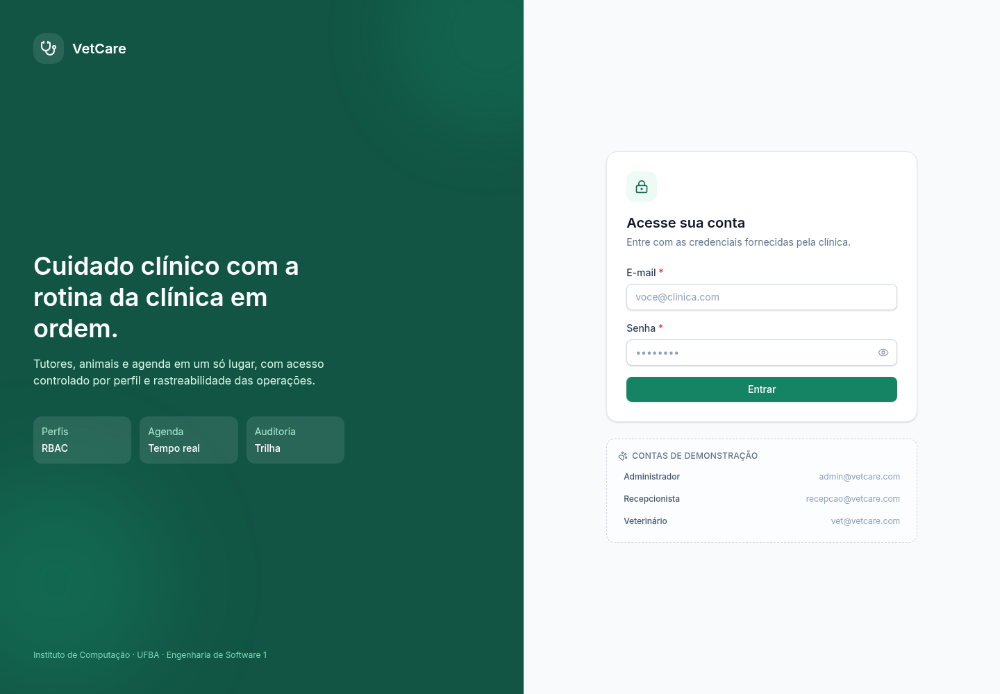
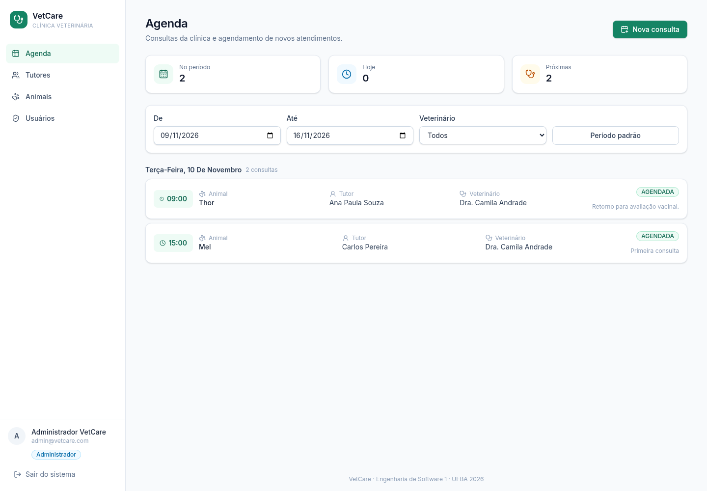
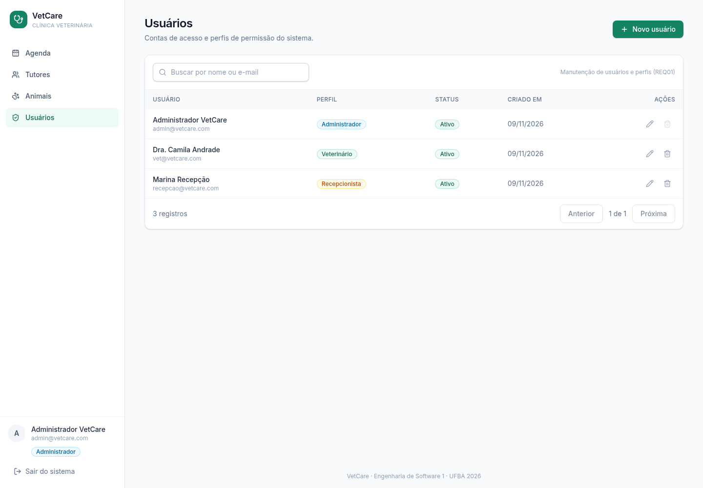
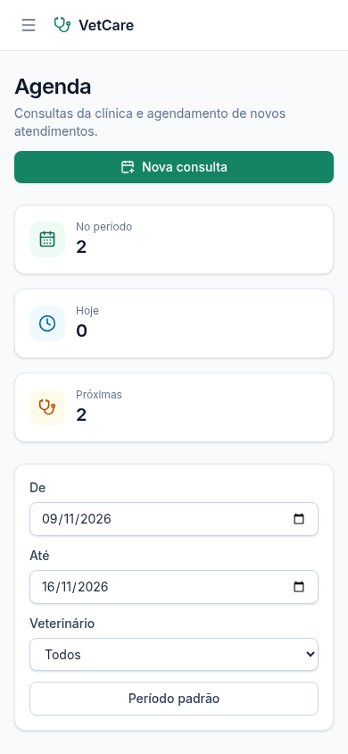

Figura 3 — Listagem e manutenção de tutores com busca e paginação (REQ04).
UNIVERSIDADE FEDERAL DA BAHIA · INSTITUTO DE COMPUTAÇÃO
Engenharia de Software 1
Relatório da Sprint 1: cadastros essenciais e agendamento de consultas
O VetCare é um sistema de gestão para clínicas veterinárias cujo Documento de Requisitos define 17 requisitos funcionais e atributos de qualidade de segurança, disponibilidade, desempenho, usabilidade e manutenibilidade. A Etapa 1 do trabalho estabeleceu a arquitetura inicial: cliente-servidor com API REST organizada em camadas, autenticação por token JWT, controle de acesso por perfil, banco relacional PostgreSQL, cache Redis, auditoria dedicada e health-checks.
Este relatório documenta a Sprint 1 do Trabalho II, cujo objetivo é implementar aproximadamente 30% dos requisitos funcionais sobre a arquitetura definida. A entrega inclui o sistema em funcionamento, testes automatizados, repositório público e os documentos de acompanhamento. O recorte escolhido prioriza a base operacional da clínica — contas, tutores, animais e agendamento — por ser pré-requisito para os demais módulos e por permitir demonstrar o fluxo completo de ponta a ponta.
Foram selecionados cinco dos dezessete requisitos funcionais, o que corresponde a 29,4% do total. Todos os requisitos escolhidos possuem prioridade Alta no Documento de Requisitos.
| Req. | Descrição | Prioridade | Situação |
|---|---|---|---|
| REQ01 | Manter Usuário — inclusão, alteração, exclusão e consulta de usuários | Alta | Implementado |
| REQ02 | Autenticar Usuário — login com credenciais e emissão de token | Alta | Implementado |
| REQ04 | Manter Tutor — cadastro, alteração, consulta e exclusão | Alta | Implementado |
| REQ05 | Manter Animal — vínculo obrigatório com tutor e dados clínicos básicos | Alta | Implementado |
| REQ07 | Agendar Consulta — animal, tutor, veterinário, data e horário | Alta | Implementado |
A seleção forma uma cadeia funcional coesa: sem usuários e autenticação não há controle de acesso; sem tutores não há animais; sem animais não há consulta. O REQ07 é a primeira operação de negócio completa do domínio e exercita as regras mais relevantes da sprint — vínculo animal/tutor, perfil do profissional e conflito de horário. Essa cadeia também permite demonstrar os três perfis de acesso e as decisões arquiteturais centrais (JWT, RBAC, auditoria e cache) já na primeira entrega.
Permanecem para as próximas sprints: REQ03 (recuperação de senha), REQ06 (manter veterinário), REQ08 e REQ09 (cancelamento e consulta de agenda por dia/semana/profissional), REQ10 a REQ13 (atendimento, prontuário, vacinação e prescrição), REQ14 e REQ15 (financeiro), REQ16 (notificações) e REQ17 (relatórios gerenciais).
VETERINARIO, cadastrado
pelo REQ01. A decisão evita duplicar identidade e autenticação e está registrada na ADR-10.
A implementação preserva o estilo arquitetural definido: cliente SPA consumindo API REST por HTTP/JSON e servidor organizado em camadas com dependência unidirecional. A tabela abaixo relaciona os componentes da Etapa 1 com a implementação desta sprint.
| Componente (Etapa 1) | Implementação na Sprint 1 |
|---|---|
| Cliente Web (SPA) | Aplicação React 19 + TypeScript + Tailwind, com rotas protegidas e menu por perfil. |
| Autenticação e Autorização | Spring Security, JWT HMAC-SHA256, BCrypt e RBAC por perfil. |
| Tutores, Animais | Módulos de cadastro com paginação, busca, validação e auditoria. |
| Agendamento / Agenda | Agendamento com validação de vínculo e conflito de horário; visão de agenda por período. |
| Auditoria / Log | Tabela auditoria alimentada pelo AuditoriaService em todas as mutações e logins. |
| Persistência / Banco | PostgreSQL 16 com migrações Flyway e índices para agenda e busca. |
| Cache (Redis) | Cache de leitura da agenda com TTL de 60 s e invalidação ao agendar. |
| API Gateway / BFF | Camada api do monólito: controllers, DTOs, validação, CORS, erros e segurança (ADR-11). |
| Notificações / Relatórios / Financeiro | Fora do escopo desta sprint. |
A Etapa 1 previu um componente de API Gateway/BFF separado e uma entidade de veterinário. Como a sprint é um monólito modular e o REQ06 não foi selecionado, duas decisões foram registradas:
VETERINARIO.As demais decisões da Etapa 1 (ADR-01 a ADR-09) foram mantidas sem alteração.
O esquema é criado por migração Flyway (V1__schema_inicial.sql) e validado pelo
Hibernate na inicialização. As chaves estrangeiras garantem integridade referencial e os índices
atendem às consultas críticas de agenda e busca.
| Tabela | Principais colunas | Regras e índices |
|---|---|---|
usuarios |
id, nome, email, senha, perfil, ativo, criado_em, atualizado_em | E-mail único; perfil restrito por CHECK; índice por perfil. |
tutores |
id, nome, cpf, email, telefone, endereco | CPF único; índice por nome. |
animais |
id, nome, especie, raca, sexo, data_nascimento, tutor_id, ativo | FK para tutor; índices por tutor e nome. |
consultas |
id, animal_id, tutor_id, veterinario_id, data_hora, status, observacoes | Três FKs; índice por data e por (veterinário, data). |
auditoria |
id, usuario_email, acao, entidade, entidade_id, detalhes, ip, criado_em | Índice por data; registro somente de inserção. |
A exclusão de usuários e animais é lógica (ativo = false), preservando o histórico
de consultas e a rastreabilidade exigida pelo atributo de integridade e auditabilidade. Tutores
só podem ser excluídos quando não possuem animais cadastrados.
O back-end foi implementado em Kotlin 2.3 sobre Spring Boot 4.1, com JDK 21+ e Maven Wrapper, mantendo a separação de camadas da arquitetura:
api — controllers REST, DTOs validados, tratamento uniforme de erros e Swagger.application — casos de uso (autenticação, usuários, tutores, animais, consultas) e auditoria.domain — entidades JPA, enums de perfil/status e interfaces de repositório.infrastructure — filtro JWT, serviço de token, integração com Spring Security.No front-end, React 19 + TypeScript + Vite + Tailwind compõem a SPA. O cliente Axios centraliza o token e trata expiração de sessão; React Hook Form e Zod validam formulários; React Router protege rotas e restringe a área de usuários ao Administrador.
| Perfil | Permissões na sprint |
|---|---|
| Administrador | Usuários (CRUD), tutores (CRUD), animais (CRUD) e agenda. |
| Recepcionista | Tutores (CRUD), animais (CRUD) e agendamento de consultas. |
| Veterinário | Leitura de tutores e animais; apenas a própria agenda. |
Senhas são armazenadas com BCrypt. O token JWT carrega identificador, nome, e-mail e perfil, com
validade configurável (120 minutos por padrão). O segredo não possui valor padrão no repositório:
sem JWT_SECRET, é gerado um segredo aleatório por execução. Requisições sem token recebem 401 e requisições
sem permissão recebem 403, ambas com corpo JSON padronizado. Login bem-sucedido, login inválido e
todas as mutações geram registro de auditoria com usuário, IP e data/hora.
VETERINARIO e estar ativo.| Método e rota | Perfis | Descrição |
|---|---|---|
POST /api/auth/login | Público | Autentica e devolve o token JWT (REQ02). |
GET /api/auth/me | Autenticados | Dados da sessão atual. |
GET/POST/PUT/DELETE /api/usuarios | Administrador | Manutenção de usuários (REQ01). |
GET/POST/PUT/DELETE /api/tutores | Admin/Recepção | Manutenção de tutores (REQ04). |
GET/POST/PUT/DELETE /api/animais | Admin/Recepção | Manutenção de animais (REQ05). |
GET /api/animais/por-tutor/{id} | Autenticados | Apoio ao agendamento. |
GET /api/veterinarios | Autenticados | Profissionais disponíveis para agendamento. |
GET /api/consultas | Autenticados | Agenda por período; veterinário vê apenas a própria. |
POST /api/consultas | Admin/Recepção | Agendamento com validação de conflito (REQ07). |
A documentação interativa (OpenAPI/Swagger) fica disponível em
/swagger-ui.html e o health-check em /actuator/health, que reporta
banco e Redis.
As telas a seguir foram capturadas da aplicação em execução, com dados de demonstração criados pelo seed. A interface é responsiva e adapta a navegação a telas menores.






A sprint conta com 30 testes de integração no back-end, executados com MockMvc sobre H2 em memória, e 9 testes no front-end com Vitest e Testing Library. Os testes cobrem autenticação, RBAC, CRUD, vínculo animal/tutor, conflito de horário e formatação de dados.
Além dos testes automatizados, o fluxo completo foi exercitado contra a stack real (PostgreSQL + Redis + API + SPA). O roteiro criou tutor e animal, agendou uma consulta, tentou repetir o mesmo horário e conferiu a trilha de auditoria no banco:
O repositório público contém o README.md com o passo a passo. Resumidamente:
# 1. Configuração (habilita o seed de demonstração)
cp .env.example .env
# 2. Banco e cache
docker compose up -d
# 3. API (http://localhost:8080)
cd backend && ./mvnw spring-boot:run
# 4. SPA (http://localhost:5173)
cd frontend && npm install && npm run dev
Credenciais do seed: admin@vetcare.com / Admin@123,
recepcao@vetcare.com / Recepcao@123 e vet@vetcare.com / Vet@123.
O seed pode ser desativado com APP_SEED=false.
A Sprint 1 entrega a base operacional do VetCare em funcionamento, com autenticação e autorização por perfil, cadastros consistentes, agendamento com regras de negócio, auditoria e cache alinhados à arquitetura da Etapa 1. O recorte de 29,4% cumpre a meta de aproximadamente 30% e estabelece os módulos sobre os quais as próximas sprints irão evoluir.
Para as próximas entregas, destacam-se: conclusão do REQ06 com atributos profissionais (CRMV e especialidades), cancelamento e consulta de agenda por dia/semana/profissional (REQ08 e REQ09), registro de atendimento e prontuário (REQ10 e REQ11), vacinação e prescrições (REQ12 e REQ13), financeiro (REQ14 e REQ15), notificações assíncronas (REQ16) e relatórios (REQ17). Também são evoluções naturais a recuperação de senha, a rotação/revogação de tokens e a observabilidade com métricas além do health-check.
UNIVERSIDADE FEDERAL DA BAHIA. Instituto de Computação. Documento de Requisitos: VetCare — Sistema de Gestão para Clínica Veterinária. Salvador, 2026.
UNIVERSIDADE FEDERAL DA BAHIA. Instituto de Computação. Trabalho I — Arquitetura do Sistema VetCare. Disciplina Engenharia de Software 1. Salvador, 2026.
UNIVERSIDADE FEDERAL DA BAHIA. Instituto de Computação. Trabalho II — Implementação do Sistema VetCare. Disciplina Engenharia de Software 1. Salvador, 2026.